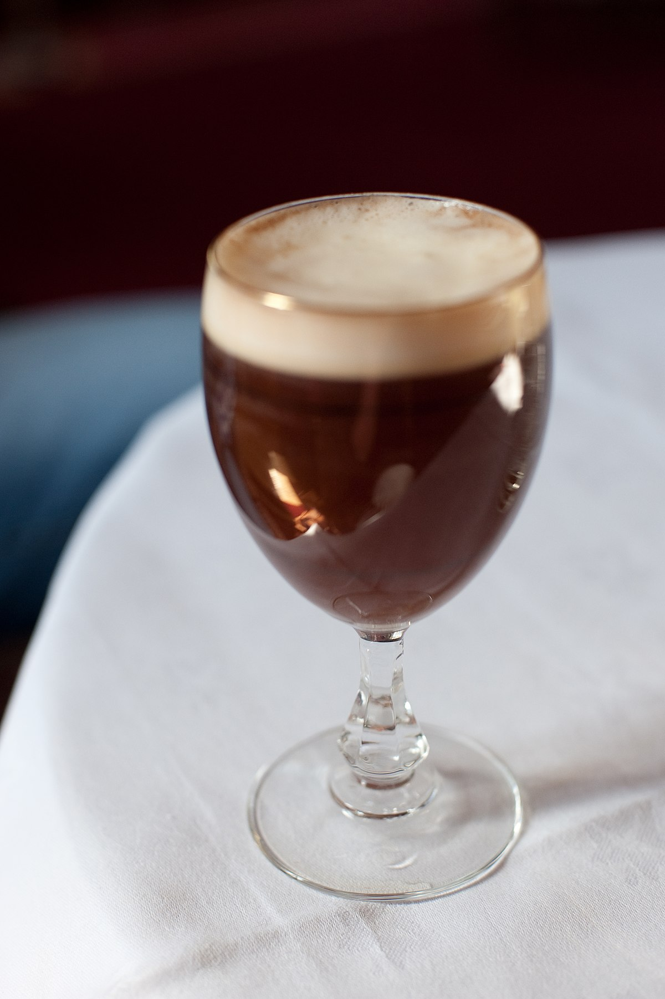

Home
Original Irish Coffee
Recipe by Dara Cruise

The Original Irish Coffee served in a glass
Want to spice up your morning coffee but don't know where to start?
Try this delicious recipe complete with some irish whiskey for a kick you
(maybe) won't regret!
Ingredients
- 1 cup freshly brewed hot coffee
- 1 tablespoon brown sugar
- 1 jigger irish whiskey (1 1/2 ounces or 3 tablespoons)
- Heavy cream, slightly whipped
Directions
- Fill footed mug or a mug with hot water to preheat it, then empty
- Pour piping hot coffee into warmed glass until it is about 3/4 full
- Add the brown sugar and stir until completely dissolved
- Blend in Irish whiskey
- Top with a collar of the whipped heavy cream by pouring gently over
back of spoon
- Serve hot